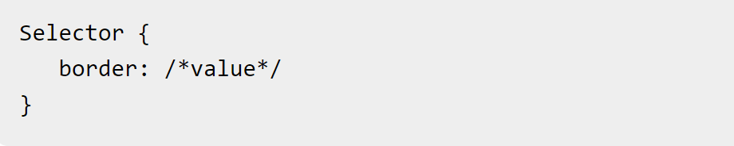

What is the difference between Margin, Border, and Padding?
We can call box an element created in HTML because it occupies 100% of its space. With CSS we can move those boxes around, make it bigger or smaller.
This is where margin, padding , and border play an important role.
The diferences between Margin, Border, and Padding are:
Margin is the space around an element. In other words the margin move the object around. On the other hand, padding is is a inner margin,and finally
border is used to set the same thickness, style, and wdith of the borders of an alement.
In order to have a better understanding here is some pictures to explain grafically
how margin, padding and border work.
Margin
In the picture below, we can see how two element push way from each other when we apply Margin
There different ways to apply Margin in CSS. The first is Margin individual sides. Like the one we see in the picture below.
The value below you can add to the propeties margin-top, margin-right, margin-bottom, and margin-left.
Auto: where the browser caculate the margin
length:specifies a margin in px (pixel), pt(point,fixed size unit), cm(centimeter).
%:specifies a margin in % of the width of the container element.
Inherit:specifies that the margin should be inherit from the parent alement.
Finally, here are some examples of how margin
and its properties and values on CSS
apply when and element is created in HTML.
In this image we see how the element
it occupies 100% of its space.
In this example we see how Margin properties
and value are applied.
This image show how to margin prorperties
and value look on the CSS.
Padding
As mentioned before, Padding is an inner margin. This mean that it is a space that exists in a container between the contents and the edges of the container.
The picture below show us how use padding.
Padding has the same properties and values that has margin. The picture below show us it.
Border
Border is simple edge around our element. Like the image below shows.
The syntax for the border CSS property is:

The follow image shows the CSS border property